In the game
What the game shows when it is started from the Loader: the Options tab's In the game section (the combat log, always on, with its level; the red ring's choice, under choosing an enemy; and the switches below). More the game's screens show, with no switch: always on.
The combat log in the game
L on the map shows the dice log's lines in the game itself, in a panel over the map's lower right, and L again hides it: in a fight or out of one, whenever you want to read back. The lines are in the Loader's colours (hits green, misses grey, damage amber, saving throws blue), the party's names in their colours and the monsters' in red, in a small font of the Loader's (7 lines where the game's own fits 6). In a fight its top line says the round and who is still to act (Round 2: Gerakis, then Cermak, Cilla); out of one it says how long the game has run (Day 47, 14:20, the game's own clock, kept in saves), and between arena fights the arena's count of fights (Arena fights: 4) until the party has escaped Draj. Out of fights the lines with a roll go in too (a thief's skills, a scroll learnt, a new level's hit points). It never waits for a click, and stays shown or hidden as you left it. While a window, a screen, a menu or a talk is up (the save and load windows, the inventory, a member's END menu) the panel is put away, so it never covers them, and it is back when the map is.
Always on (no switch). How much it says is the tab's choice, under The combat log in the game (L on the map shows and hides it): ... at the least: what came of each attack and spell (Rampager hits Defiler for 4), ... in short: each roll, what it needed and the damage (the default: Rampager hits Defiler for 4 (20 vs 16+), the d20 and the roll it needed), or ... in detail, as in the log (every line, each attack's THAC0 and its parts). A spell that rolls to hit and Turn Undead read as hits and misses.
The panel keeps the last 200 lines: drag its scrollbar, click above or below the handle for a page, or turn the mouse wheel over it (on Windows); scrolled back, it stays put and a Latest chip counts the new lines (click it to follow again). Clicks on it are its own: the party doesn't walk there. Its top line's buttons are L (hide), the level (Least, Short, Detail; the Options tab follows), and - and +: collapsed, one line, the newest; seven lines; expanded, 12 lines with the filters All, Party, Damage (hits, damage and deaths) and Saves (saving throws and magic resistance). Its size is remembered. A window the game opens over the map hides it until it closes; expanded, it covers the game's damage numbers there.
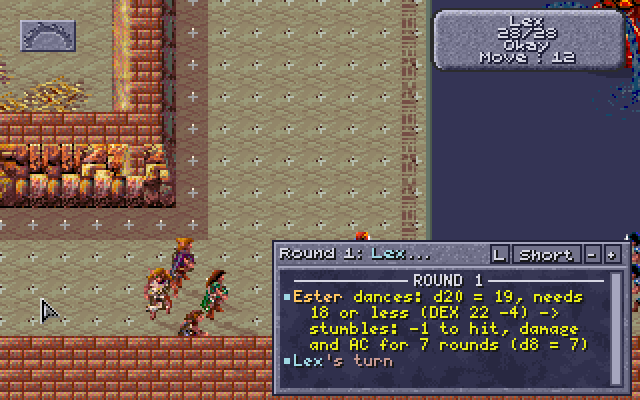
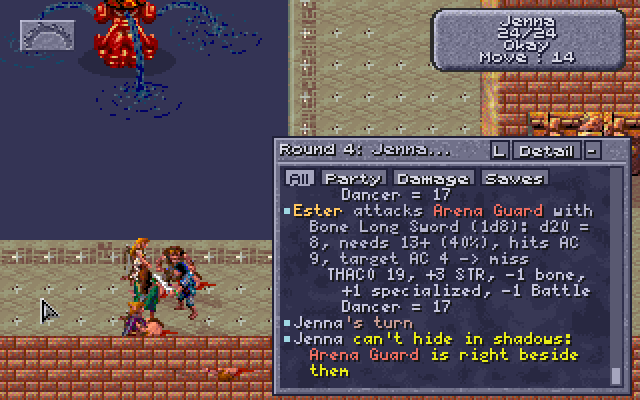
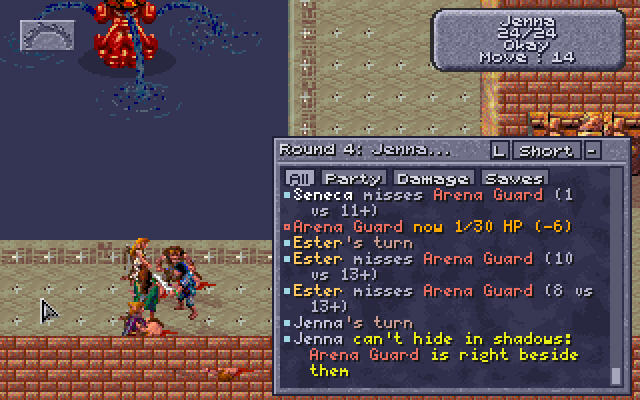
Rules: the dice log, line by line. How it works: DEVELOPMENT-SCREENS.md.
What hurts a monster (the Look box)
In a fight, Look at a monster and the game's small box, under its name and level, also shows its hit points and AC (HP 15/15 AC 2), its THAC0 and alignment in two letters (THAC0 17 AL TN), its magic resistance (LEVEL: 3 MR 30) and its most important defence (NEEDS +1 WEAPON, IMM FIRE COLD, NO CRUSH, HALF FROM WPNS, UNDEAD), then its own status lines. Closing the box shows the rest in the game's dialogue window: the weapons it needs, the damage it's immune to or takes half of, the spells that don't work on it and what its hits do. The AC is the one the game last used against it, or worked out as the game would (armour, shield, DEX) until something has attacked it. The dice log gets the same lines (Look: ...).
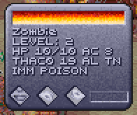
Switch: What hurts a monster (the Look box): Look at one in a fight for its hit points, AC, THAC0 and defences; closing the box shows the rest in a window. Rules: monsters, monsters' defences. How it works: DEVELOPMENT-SCREENS.md.
Names over figures
A spell's name floats over its caster for a second and a half as it is cast, and "Miss" over anyone an attack misses, in the game's lettering, for the party and the monsters, in fights and out (a weapon's spell on a hit too). A charge used floats over its owner in light blue for three seconds ("Armor: 7 left", "Reflected Image: 2 left", "Armor ends"), and after a party archer's shot the arrows left ("Arrows: 17 left", "Stones" for a sling, "Out of arrows"). Up to four show at once; long names are shortened ("Lesser Water Elem."), and near the top of the screen a name goes under the figure's feet. An archer whose quiver runs dry in the middle of its shots keeps its turn, to walk, fight hand to hand or end it.
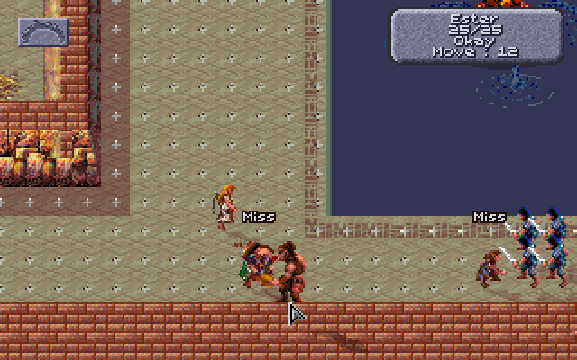
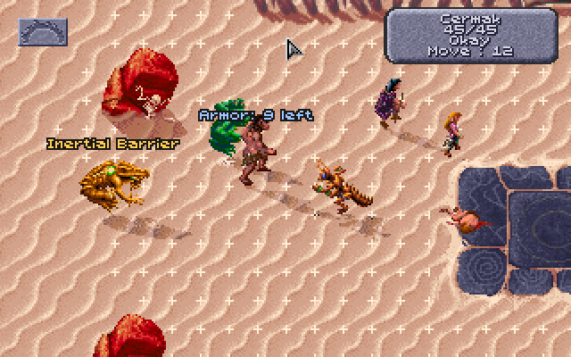
Switch: Names over figures: a spell's name over its caster, "Miss" over whoever an attack missed, a used charge ("Armor: 7 left") over its owner, and the arrows left over a party archer after each shot. How it works: DEVELOPMENT-SCREENS.md.
The chance to hit before the swing
With an enemy chosen with Tab, the Loader says what the party member whose turn it is must roll on the d20 to hit it, and the chance, before anything is swung: on the dice log's line that names the enemy (Chosen with Tab: Guard (50 HP), needs 14+ (35%) - Enter attacks it) and in the combat log's header, in place of the round's line while the enemy is chosen (Needs 14+ (35%)). It is the number the dice log shows for the attack itself, worked out the way the game does: THAC0 with the weapon less the enemy's AC as it counts against this attacker. Each weapon is named where they differ, and both numbers are given where the swing may come from behind.
Under the pointer. On a party member's turn, rest the game's pointer on an enemy and the same number floats over it, as "Miss" does: 12+ (45%). It goes when the pointer leaves the enemy or the turn passes. A label is narrow, so it gives one weapon, the one a click would swing first: next to the enemy the first weapon in hand; farther off the walk-up's with the walk arrow and the shot's with the attack pointer. With the look pointer (the eye) nothing shows: a click there only looks. Tab's choice is left alone: the pointer changes neither the ring nor the combat log's header.
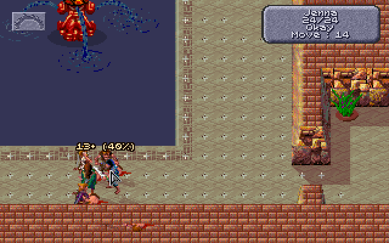
Switches: The chance to hit: with an enemy chosen with Tab, what the d20 must show to hit it and the chance, in the dice log and the combat log's header, and The chance to hit under the pointer: in a fight, with the pointer over an enemy, what the d20 must show and the chance float over it. Rules: the chance shown before the swing. How it works: DEVELOPMENT-SCREENS.md.
Squares in reach
In a fight, on a party member's turn, every square that member can still walk to this turn has a small cross on the floor: a light one on sand, dirt and paving, a dark one on a floor of other colours. The crosses follow the turn: fewer as the member walks and its movement is spent, none once it is spent, and the next member's as the turn passes. They are drawn on the floor, so figures and walls stand on them, and a square a figure stands on (an ally's too) has none: nobody walks through anybody. What lies on the floor covers them as well: a square under a rug or the arena's stone platform can be walked on but shows no cross.
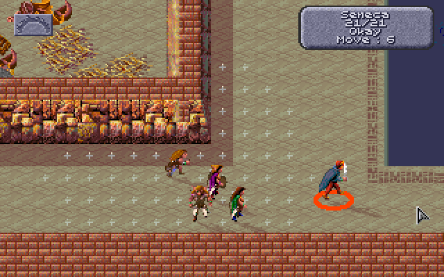
A marked square is one a single click walks to. The game counts 10 for a step straight and 14 for a diagonal one out of ten times the Move the name box shows, and the crosses are counted the same way, by the shortest way round walls, through doorways and past whoever stands in the way (moving in a fight). One limit: where a wall or a doorway makes the game go round, its own way can cost a little more than the shortest, so the farthest crosses behind a wall may be a step out of one click's reach: click a nearer cross first, then the far one. Walking past an enemy costs nothing more, and a click on an enemy's figure is still an attack, not a walk. F10, the game's own key, takes a move back (below).
R hides the crosses and shows them again, on the map in a fight, as L does the combat log: the dice log says which (Squares in reach: hidden (R shows them)), "Squares hidden" or "Squares shown" floats over the member whose turn it is (with names over figures on), and the choice is remembered for the next fight and the next start. The game has no use for R on the map. With the switch off there are no crosses and R does nothing.
Switch: Squares in reach: in a fight, a small cross on each square the party member whose turn it is can still walk to (R in a fight hides and shows them). Rules: moving in a fight. How it works: DEVELOPMENT-SCREENS.md.
F10 takes a whole move back
In a fight F10, the game's own key, takes a party member's move back: the member stands where its turn began, with the movement it had. In the game that works only while some movement is left: after the last step F10 still puts the member back, and the name box shows its Move again, but no click walks it (moving in a fight). With the Loader the member can walk again then too, and the dice log says so (F10: Ester's move taken back (can walk again)). Nothing else changes: an attack is not taken back, and after an attack (one that kills can leave the member its turn) F10 gives no walk, nor to a member held or stuck (Paralyzed, Stuck).
A held or stuck member stays put. The game's F10 put a Paralyzed or Stuck member back on the square its turn began on, with its points, as if it could still move. Now F10 does nothing for such a member: it stays where it is. This one is always on, whatever the switch.
Switch: F10 takes a whole move back: after the last step too, the party member can walk again (the game's F10 puts it back but lets it walk no more). Rules: moving in a fight. How it works: DEVELOPMENT-SCREENS.md.
Showing what can be used: Alt
Hold Alt on the map, out of a fight: a gold ring appears on the ground under everything in view that a click does something with, and the four nearest the pointer have their names over them. Move the pointer and the names move to what is nearest it; let go of Alt and all of it is gone.
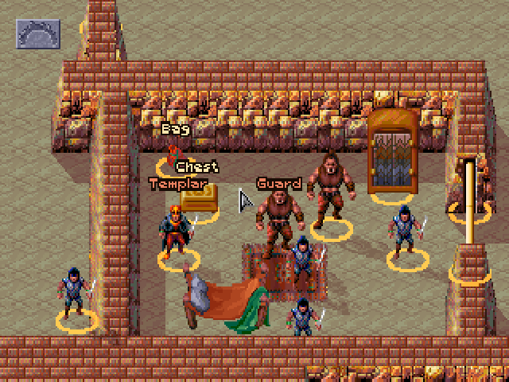
What gets a ring: people to talk to, their names in pale gold, and anyone else on another side than the party's (guards with nothing to say, monsters), named in red: there is nothing to do with them but fight; doors, each leaf (the look pointer opens and closes them); chests, bags and other containers, and bodies; items lying on the ground; and things a script answers to (a haystack that can be searched, a button, a lever, a fountain a pot can be filled at). Plain scenery gets nothing, nor does the party, and a secret door stays secret; a thing the game has no name for is ringed without one.
Walking and clicking work as ever while Alt is held. In a fight Alt does nothing: the ring there is the red one under the enemy chosen with Tab, and a fight that starts while Alt is held takes the gold rings and the names away. The marks cost some speed while they are up (a walking party is about a sixth slower). Alt with another key is still what it was (Alt+Enter is DOSBox's full screen), and if Alt reads as held for 30 seconds on end the marks go until it is let go, so a key left "held" by switching windows can't leave them up.
Switch: Showing what can be used: hold Alt on the map, out of a fight. How it works: DEVELOPMENT-SCREENS.md.
Rule changes
The game's rules brought closer to AD&D's, in three groups: characters, weapons and armour and magic. Most are always on, with no switch; three keep one in the Options tab's Rule changes section: hit dice, half-giants' two-handed weapons and helms give AC 1. Untick one and the game's own rule is back at once. How the game works has what the game does without them, and the player's guide the rules with them.
Most put right a rule the game gets wrong (below). The rest are the mod's own choices: helms' AC, resting, the XP level cap, hit dice, creation scores, half-giants' weapons, creature size, weapon traits (cahulaks, stinkpots, polearm reach), rings and cloaks of protection, and ages.
Rules the game got wrong
Corrects the game: each of these rule changes puts right a rule the game gets wrong (it departs from its own manual, from itself or from the Player's Handbook), and is one of the game's bugs that the mod mends. All are always on now, with no switch.
| Rule | The game | As it should be | Entry |
|---|---|---|---|
| Saves against spells | Petrification or polymorph for almost every spell | The save against spells | Spells saved against with the spell save |
| Fire, cold and electricity | The save's d20 doubled (70% to save a Fireball where 35% is due), which the manual and AD&D don't have | DEX's adjustment | Fire, cold and electricity: DEX instead of a doubled d20 |
| Spells, psionics and monsters | Saves, times, damage and effects that part from its own manual (pp. 30-86: the bestiary, spells and psionics) | As the manual has them | As the manual describes them |
| Turn Undead | A d20 against a number of its own, a row too easy for 2- and 3-HD undead and a row too hard for 5 HD; a success destroys, there is no fleeing, and a priest may try the same undead as often as they like | AD&D's turning table: undead turned flee for 3d4 rounds, D destroys, D* destroys more of the kind, "---" no chance; a priest who fails can't try that undead again that fight (the table) | As the manual describes them (it goes with the spells) |
| Missile and touch spells | Every one lands, every time | They roll to hit ("as if fired by a fighter") | Spells roll to hit |
| Enlarge | Grows the whole hit, STR's bonus and magic's too, rounded down | The weapon's dice grow, rounded up; STR, class and magic aren't altered (Player's Handbook p. 173) | Enlarge |
| A ranger's spells | Spell levels by its level less 7, but duration and damage by its whole level | Level less 7 for all | Rangers' casting level |
| Preservers' spells | Any spell learnt from any scroll, every spell known | INT's chance to learn, and its most spells of each level | Preservers' INT |
| Dual-classing | From 2nd level, one prime requisite a class | From 3rd level, every prime requisite (the game's manual, pp. 12 and 22-26) | Dual-classing |
| Class restrictions | The game's item lists, one class allowing an item enough | Those lists as they are, and AD&D's limits for every class, the strictest winning | Class restrictions |
| Multiclass hit points | CON's bonus once a level | CON's bonus on every hit die, the total shared | Multiclass hit points |
| Class tables | Priests' THAC0 a level early, short spell slots, a little too little XP for 2nd level | AD&D's tables | AD&D's class tables |
| CON 20 and up | A hit point back every 5 minutes at any CON; CON's adjustment on a dwarf's or halfling's poison save | AD&D's rate (one an hour at CON 20, one every 10 minutes at 25); the racial bonus only | CON as in AD&D |
| Two weapons | No penalty (a small bonus at DEX 5 or less), the full rate in each hand | -2 and -4, DEX's adjustment, one attack with the off hand | Two weapons |
| Warriors' attacks | 3/2 with any weapon | The plain rate outside a specialization | Weapon specialization |
| Held and Out Cold targets | A roll to hit as ever, and double damage | A hit automatically, for normal damage | Held targets |
| Acid on armour | The item destroyed outright | Each item saves by its material | Items saving against acid |
| Thief skills and backstabs | Skills too high (a 3rd-level elf with move silently 66); a backstab multiplied STR's bonus too | The Player's Handbook's table; a backstab multiplies the weapon's dice only | Thieves as in AD&D |
Two more of the game's bugs are mended for good too: Cilla's figure (the game gives the elf the half-elf woman's; see Elves and half-elves), and a click on a spell's icon on the Effects screen ending it (Spells on the Effects screen).
Characters
Class restrictions
The game's own item lists still need only one of a character's classes; on top of them, each class's limits on armour, shields and weapons hold for every class, the strictest winning. A multiclass preserver casts no spells in armour (the USE screen says NO SPELLS IN ARMOUR), and a thief with another class has no thief skills or backstab in armour that isn't light; a new character starts without what its classes can't use.
Always on (no switch). Rules: what each class may use, the kits' own limits in Kits. How it works: DEVELOPMENT-RULES.md.
Multiclass hit points
A character of several classes gets CON's bonus on every hit die it rolls (a warrior's if one of its classes is a warrior, else at most +2), into a total shared between its classes, as Demihuman Deities (TSR, 1998) sets out AD&D's rule; the game gave it once a level of the highest class. A human who dual-classes isn't affected (Gerrard's 4th Fighter level: hit points d10 = 8, +3 CON 17, into the total shared by 2 classes).
Always on (no switch). Rules: hit points. How it works: DEVELOPMENT-RULES.md.
Hit dice: the better of two
Every character's hit die is rolled twice and the better kept, at creation and at every level: not AD&D's, but it softens a bad roll (a d10 gives 7.15 on average instead of 5.5, a d4 3.1 instead of 2.5). CON's least, a half-giant's double and a multiclass share come after, as before (Cilla's 3rd Ranger level: hit points d10 = 2 and 7, the better 7).
Switch: Hit dice: the better of two, each die rolled twice at creation and at every level (every character). Rules: hit points. How it works: DEVELOPMENT-RULES.md.
Scores and hit points as rolled
On the creation screen the six scores add up to no more than the die gave (lower one to raise another; SUM under CHR shows both totals, SUM:99/101), and the hit points are as rolled, CON moving them by its bonus. The game let a click raise any score to its most and set the hit points anywhere the classes could roll.
Always on (no switch). Rules: ability scores. How it works: DEVELOPMENT-RULES.md.
AD&D's class tables
AD&D's tables hold where the game's differ: the XP for each level (a gladiator, ranger and thief need a little more for 2nd), priests' THAC0 (20, 20, 20, 18..., where the game improves a level early) and clerics', druids' and preservers' spell slots (3 3 1 and 4 2 1 at 5th, where the game gives 3 2 1). The rest were AD&D's already; kits still change these tables.
Always on (no switch). Rules: experience and levels, THAC0 by level, spell slots. How it works: DEVELOPMENT-RULES.md.
CON as in AD&D
A party member with CON 20 or more gets hit points back at the Player's Handbook's rate, from one an hour at CON 20 to one every 10 minutes at 25, where the game gave one every 5 minutes at any such CON. The same box leaves a dwarf's or halfling's racial bonus alone on paralysis/poison/death saves, where the game added CON's adjustment on top (a dwarf with CON 19 saves at +5, not +6).
Always on (no switch). Rules: hit points, saving throws. How it works: DEVELOPMENT-RULES.md.
Ages and magical aging
Each party member has an age from the Dark Sun rules' tables, a year older each 365 days of game time; middle, old and venerable age change the scores, and a character dies at the most its race lives. Haste ages a year, after a system shock roll to survive, as the AD&D spell does. The age shows on the creation screen, the inventory panel and the Characters tab, and the hair greys on the map. The game keeps no ages.
Always on (no switch). Rules: ages (the tables). How it works: DEVELOPMENT-RULES.md.
Dual-classing as the manual has it
DUAL comes at 3rd level, as the manual says ("You must be at least third level in your current class before you can dual class", p. 12), and every prime requisite counts (pp. 22-26), 15 for the old class and 17 for the new. The game offered it from 2nd level and checked one score a class (WIS alone for a ranger, druid or psionicist).
Always on (no switch). Rules: more than one class, prime requisites. How it works: DEVELOPMENT-RULES.md.
Level cap by XP
The game stops every class at 9th level. With the rule a class goes up while its next level needs no more than 749,999 XP, shared between a character's classes: the most that keeps a druid from 13th and a preserver from 12th, where it would cast 6th-level spells. Everything past 9th (hit points, THAC0, saves, spell slots, thief skills) is the game's own, which the cap kept out of reach. XP stops at the cap too: the Loader holds a character's XP at its share, so none is banked past its highest level (the dice log says what wasn't counted; without the mod it counts on to 2,000,000,000).
Always on (no switch). Rules: experience and levels, XP stops at the cap. How it works: DEVELOPMENT-RULES.md.
Weapons and armour
Two weapons
Always on, with no switch: a character with a melee weapon in each hand attacks at −2 with the main hand and −4 with the off hand, plus DEX's reaction adjustment (never a bonus), and the off hand attacks once a round. Rangers, Twin-blades and Battle Dancers in light armour have no penalty, a Justifier none in any, a Ghetto Fighter 0 and −2. The game had no penalty and gave each hand the whole rate. Rules: two weapons; the game's, the game's two weapons. How it works: DEVELOPMENT-RULES.md.
Half-giants' two-handed weapons
Half-giants stand up to twelve feet tall: a half-giant holds a two-handed weapon in one hand, with a shield or a light weapon in the other. Two heavy weapons still can't be held at once, and cahulaks still take both hands. The inventory's "2 handed" is the weapon's type, not a limit.
Switch: Half-giants' two-handed weapons: a half-giant wields one in one hand, a shield or a light weapon in the other. Rules: races. How it works: DEVELOPMENT-RULES.md.
Weapon traits
The mod gives weapons what AD&D's books give them and the game doesn't: the cahulaks their two heads and their tangle, the staff sling its stinkpots, the polearm its reach; and Wake of the Ravager's lotulis, double spear and trikal what the sequel's weapons guide gives them.
Always on (no switch).
Cahulaks
A pair of four-bladed heads on a rope, one in each hand, as Dark Sun's rules describe them: the wielder attacks once more a round with the off head, under the two-weapon penalties, and a hit that does damage tangles a man-sized or smaller foe that fails a save against petrification: it loses its next turn. Who is too big, or has no body a rope could hold, is the mod's call: the creatures' table (spoilers) marks each.
Lex attacks Templar with Bone Cahulaks (1d6): d20 = 16, needs 16+ (25%), hits AC 4, target AC 4 -> HIT
THAC0 18, +3 STR, -1 bone, -4 cahulaks, off head at DEX 10 = 20
Lex hits Templar for 12: 1d6 = [5] -1 bone +8 STR 20
Lex's cahulaks tangle Templar? Save against petrification: d20 = 2, needs 19+ -> tangled: loses its next turnRules: cahulaks. How it works: DEVELOPMENT-RULES.md.
Lotulis and double spear
Two-headed weapons, a blade or a point at each end: a specialist (its weapon spec chosen, mastery too) fighting with one turns the round's last swing on a second foe beside it, one on the first target's side and next to the wielder, when the round has two swings or more. The double spear's second head does 1 less damage (no less than 1). With no other foe beside it, the swing stays on the first.
Jenna hits Arena Guard for 14: 1d8 = [4] +2 specialized +8 STR 20
Jenna turns the double spear's last swing from Arena Guard to Arena Guard, beside it (a specialist's second foe, 1 less damage)
Jenna attacks Arena Guard with Wooden Double Spear (1d8): d20 = 6, needs 10+ (55%), hits AC 8, target AC 4 -> HITTrikal
A three-bladed polearm with a hooked haft: a specialist's hit that does damage trips a man-sized or smaller foe unless it saves against paralysis: it loses its next turn. Who is too big, or has nothing to trip, is the cahulaks' list. Held with no other weapon, it reaches two squares as a polearm does (polearm reach).
Jenna hits Arena Guard for 15: 1d10 = [5] +2 specialized +8 STR 20
Jenna's trikal trips Arena Guard? Save against paralysis: d20 = 12, needs 13+ -> tripped: loses its next turnRules: two-headed weapons and the trikal. How it works: DEVELOPMENT-RULES.md.
Staff sling stinkpots
AD&D's Arms and Equipment Guide gives the staff sling a clay pot of burning sulphur to throw: 1d3 against any size (the game's shot 1d4), and a target hit saves against poison or is Nauseated, −2 to hit for 1d3+1 rounds (Lex's stinkpot: Templar is nauseated, -2 to hit for 1d3+1 = 2 + 1 = 3 rounds). Undead and the immune to poison are spared; it is fumes, so Dispel Magic doesn't end it. Rules: stinkpots, grand mastery's damage. How it works: DEVELOPMENT-RULES.md.
Polearm reach
A polearm held with no other weapon (a shield or a bow in the missile slot is fine) strikes in melee at two squares as well as one, straight or two across and one along, over a creature in between but not through a wall. It holds for the party and its foes alike; every polearm has it, Thornwall and Linebreaker too, and Wake of the Ravager's trikal, a polearm with three blades. Rules: polearm reach. How it works: DEVELOPMENT-RULES.md.
Creature size
The game keeps no sizes; the mod gives each creature the size the creatures' table lists. A large target (a half-giant, a large monster, anyone Enlarged) takes AD&D's dice against large creatures (a long sword 1d12 for 1d8), and Hold Person, Charm Person and Charm Person or Mammal (on a person) don't take on it (Guard is too big for Hold Person -> unaffected). A weapon's item box shows both dice (1D8-1/1D12-1). The pick does the footman's pick's 1d6+1, where the game had the horseman's 1d4+1.
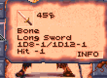
Always on (no switch). Rules: equipment (every weapon's dice), size. How it works: DEVELOPMENT-RULES.md (and where the dice come from).
Held targets
A Paralyzed or Out Cold creature is hit automatically by every blow, shot or throw, a natural 1 too, for normal damage, as the Player's Handbook has it, both ways; the game rolled the d20 as ever and doubled the damage (helpless targets take double). A Mirror Image can still take the blow.
Always on (no switch). Rules: hitting. How it works: DEVELOPMENT-RULES.md.
Rings and cloaks of protection
The mod's two rings and cloak of protection (new items), +1 to AC and saves, follow AD&D's rules: two rings don't add up, a ring gives no AC with magical armour, and a cloak does nothing with magical or metal armour or a shield.
Always on (no switch). Rules: protection. How it works: DEVELOPMENT-RULES.md.
Helms give AC 1
The game's helms count as armour but give AC 0; with the rule every helm gives 1, the game's and the mod's, shown on View Character, the inventory and as AC BONUS:1 in a helm's box.
Switch: Helms give AC 1 (the game's helms give none). Rules: armour, the helms in Items. How it works: DEVELOPMENT-RULES.md.
Items saving against acid
The Rampager's acid and the Babau's corroding touch destroy worn armour, or a held weapon, without a magical power outright in the game, plus or no plus. With the rule each item needs the easier of the game's number and AD&D's saving throw against acid by its material, less its plus (leather armour goes from 0% to 55%), so no item is worse off. The dice log shows every check.
Always on (no switch). Rules: acid; every item's chance, items against acid. How it works: DEVELOPMENT-RULES.md.
Magic
Rangers' casting level
A ranger's spells last and do damage as cast at its level less 7, as the spell levels it may cast already count it (a 9th-level ranger's Protection from Evil lasts 6 rounds, not 27); the game took the whole ranger level. The Seeker and Justifier take off 5 and 9 instead.
Always on (no switch). Rules: how spells work. How it works: DEVELOPMENT-RULES.md.
Preservers' INT
AD&D's table for INT holds: a chance to learn each spell from a scroll (35% at INT 9 to 100% at 24; a failed roll uses the scroll up) and a most of each spell level known (6 at INT 9 to all from 19). The game let a preserver learn any spell from any scroll, and know them all.
Always on (no switch). Rules: learning preserver spells. How it works: DEVELOPMENT-RULES.md.
Spells saved against with the spell save
This goes with DEX instead of a doubled d20. Almost every spell is saved against with the spell save, where the game used petrification/polymorph; those marked for paralysis/poison/death (the poison clouds, Poison, Slay Living, the psionic attacks) keep it, as in AD&D. The dice log and the Spells tab name the save used.
Always on (no switch). Rules: saving throws. How it works: DEVELOPMENT-RULES.md.
Fire, cold and electricity: DEX instead of a doubled d20
The game doubles the save's d20 against these spells (and nine monsters' attacks), so most creatures shrug off a Fireball. With the mod DEX's defensive adjustment is added instead, as AD&D does for what can be dodged: 35% to save a Fireball at DEX 12, where the doubled d20 gave 70%, and 60% at DEX 21 (+5 DEX 21 dodging). Rules: saving throws (the table). How it works: DEVELOPMENT-RULES.md.
Enlarge multiplies the weapon's dice only
Only the weapon's dice grow, 10% a caster level, rounded up, and STR, the weapon's plus and the rest are added after, as the Player's Handbook (p. 173) has it; the game multiplied the whole hit, rounded down. With creature size an Enlarged creature also counts as large.
Gerakis hits Screamer Beetle for 21: 1d8 = [4] -1 bone +2 specialized +3 Wild Fighting +12 STR 24 +1 Enlarge (the dice 4 x110% = 5, level 1)Always on (no switch). Rules: how spells work. How it works: DEVELOPMENT-RULES.md.
Spells and psionics as the manual describes them
Twenty-four spells and two psionic powers whose saves, times, damage or effects part from the manual are set as it has them (the mod's Cat's Grace by the Tome of Magic's dice); a priest's Turn Undead goes by AD&D's turning table, turned undead fleeing; a classless monster saves by its hit dice, not as level 0; and seven monsters get a power the manual gives them or lose one it doesn't (the shadows drain STR, the Styr breathes fire, the Djinn turns invisible...). "Can't save" now failing is a bug fixed.
Always on (no switch). Rules: spells and psionics as the manual describes them (every spell and monster it changes, and what is left as it is), AD&D's turning table. How it works: DEVELOPMENT-RULES.md.
Spells roll to hit
Missile spells (Acid Arrow as if fired by a fighter of the caster's level, Turn Pebble to Boulder, Magical Stone, Condense, Minute Meteors' globes, monsters' spines) and touch spells on a foe (Chill Touch, Shocking Grasp, Vampiric Touch, the Cause spells, Poison) roll a d20 against the target's AC as a weapon does, and a miss does nothing. The game landed them all, every time. Magic Missile, Flame Arrow, areas, cones and psionic powers are left as they are.
Always on (no switch). Rules: how spells work. How it works: DEVELOPMENT-RULES.md.
Resting as in AD&D
The game's rest fills every member's hit points (how the game rests). With the rule the priests first spend the spells they have left on the party (Neutralize Poison, Cure Blindness, Cure Disease, then the cures on the most wounded), the psionicists their Cell Adjustment, and then each member heals 3 hit points plus CON's bonus: a middle way between AD&D's night and the game's full heal. Slots and PSP still fill.
Always on (no switch). Rules: resting. How it works: DEVELOPMENT-RULES.md.
More character customization
More choices for each character. Kits and fuller starting gear have switches, in the Options tab's More character customization section; weapon specialization and STORE and RECALL are always on. The picks every new character makes at DONE are always on too.
Weapon specialization
Fighters, gladiators and rangers train in chosen weapon specs, as in AD&D: a fighter specializes in one, on to mastery at 5th level and grand mastery at 9th; a gladiator in two, then more; a ranger has expertise in one and the bow; three kits take expertise and the Swashbuckler a weapon of choice. With a chosen weapon spec a warrior keeps the game's attacks a round and shoots faster, with any other AD&D's plain rate. Each picks after DONE and starts with a plain weapon of its pick.
Always on (no switch). Rules: Weapon specs. How it works: DEVELOPMENT-RULES.md.
Kits
A character may take a kit when it is made, on the creation panel's KIT page: three for each class, and thirteen for one race's pair or set of classes (the Battle Dancer, Spellarcher, Wild Fury...), each giving something and costing something. A human with no kit may take one for its new class right after DUAL.
Switch: Kits: three for each class and some for multiclass characters, one a character, each giving something and costing something (chosen on the creation panel's KIT page, or after DUAL by a human with none). Rules: Kits, choosing one, changing class. How it works: DEVELOPMENT-KITS.md.
STORE and RECALL on the creation screen
STORE, under the hit points, keeps the roll on screen (the scores, the die's total, hit points, PSP and age), and RECALL brings it back however many times the die has been rolled since, as in Baldur's Gate. Changing the race, sex, classes or kit forgets it.
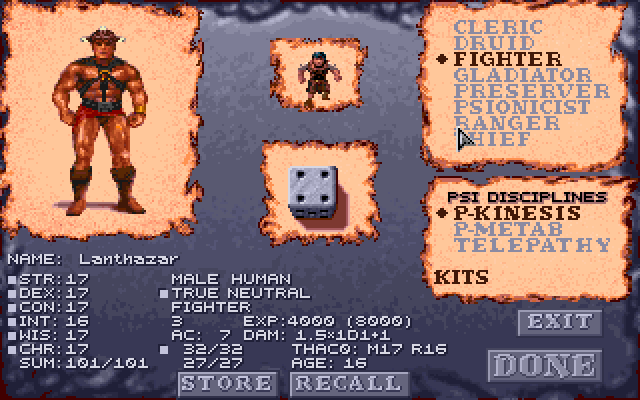
Always on (no switch). Rules: ability scores. How it works: DEVELOPMENT-RULES.md.
Fuller starting gear
A new character also gets a weapon in hand it can use, a sling (a Battle Dancer a bow and arrows), leather armour where it may wear it, and a Stalker, Assassin or Shinobi a cloak to hide in; never what it can't use or already has, and nothing for a thri-kreen (Swat starts with more gear: Short Sword (in hand), Arm Armor, Leg Armor).
Switch: Fuller starting gear: new characters (and the game's own party) also get a weapon they can use, a sling, and leather armour where they may wear it. Rules: the classes (each class's gear), starting gear. How it works: DEVELOPMENT-RULES.md.
The game's own party
START GAME with no party made plays the game's own four, made before these choices existed. The Loader fits them to weapon specialization and class restrictions (always on), and to kits and fuller starting gear when those are on, in the first moments of a new game, and says so in the dice log:
| Character | Weapon specialization | Class restrictions | With kits |
|---|---|---|---|
| Gerakis, half-giant gladiator | specializes in the long sword and the gythka; with half-giants' two-handed weapons, his club is a bone gythka, a two-handed weapon beside his long sword | Wild Fighting, as a Wild Fury has it, as each fight starts | |
| K'ratchek, thri-kreen fighter, druid and psionicist | specializes in the chatkcha, her only weapon | casts and uses psionics as a Wasteland Seer does (druid spells 2 levels higher under the open sky, 1 lower under a roof; psionic powers 2 PSP less under the open sky, 1 more under a roof); her chatkcha's one throw more a round is every thri-kreen's (5/2 a round, specialized; Weapon specialization), not hers alone | |
| Cermak, human preserver, once a gladiator | specializes in the long sword and the axe, which count once his gladiator levels do again (when his preserver level passes them) | an Arcanist, the kit of his preserver class: his preserver spells cast a level higher | |
| Cilla, elf preserver, druid and thief | no leather armour (a druid wears none), and she knows the Armor spell in its place | an Elven Shadow-walker (her own feature): her hiding in shadows is never halved in daylight |
The features are their own, not kits', and show where kits do. Cermak keeps his gear and hit points (the Arcanist's d3 counts from his next level); with fuller starting gear Gerakis gets a sling and leather chest and leg armour, the others nothing more. Cermak and Cilla keep the game's starting spells. Cilla is drawn as the elf she is: elves and half-elves.
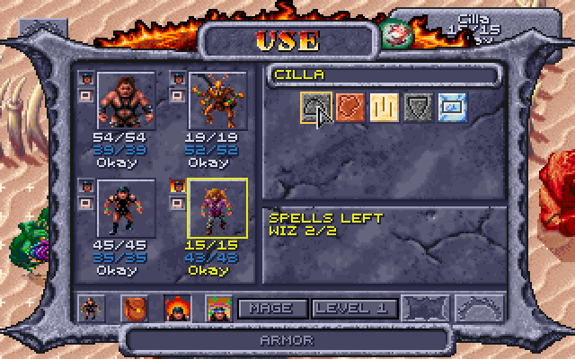
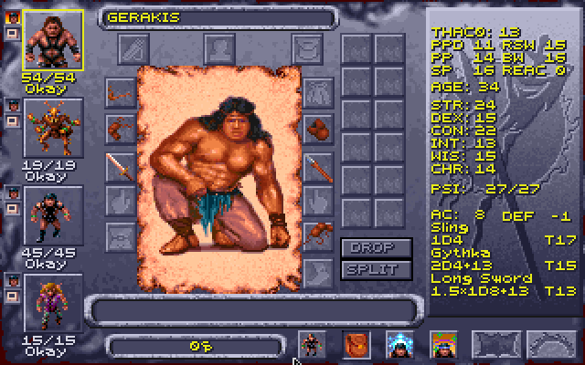
How it works: DEVELOPMENT-RULES.md.
Wake of the Ravager's own party (a new game started with no party made) gets the same treatment, the owner's choices of 2026-11-26. The Loader gives it out once, when it finds them with no weapon specs and no kit (a game saved before, too), and says so in the dice log:
| Character | Weapon specialization | With kits |
|---|---|---|
| Gerakis, half-giant gladiator | the long sword, the gythka and the trikal | Wild Fighting, as in Shattered Lands |
| Thy'rokh, thri-kreen fighter and fire druid | the gythka (mastery at once: he is a 6th-level fighter) | a Grove Warden's AC: 1 better for every 3 druid levels |
| Terrannus, human earth cleric | the long sword, his kit's chosen weapon spec | a Crusader (a warrior's THAC0, expertise with the long sword, a warrior's extra attacks), at the kit's full cost: one fewer spell slot at each spell level |
| Ar'Anda, elf preserver, psionicist and thief | the Elven Shadow-walker's hiding (never halved in daylight), and she casts in light armour (leather, or of no material), though a multiclass preserver |
Without these, the sequel's level up would ask each of them for weapon specs, as it does in Shattered Lands for a game begun before the rule.
New content
Spoilers, mild: the people and scenes are told in full, with spoilers, in People, and where each item is in Items.
Spells, people, a quest, an arena bout and items the mod adds, in the Options tab's New content section. The people, the quest, the bout and the items count from the next start, in places not yet visited (a saved game keeps what it already has: people met, items given); the new spells and the defilers' scrolls at once.
New wizard spells
Six wizard spells from AD&D's Spells & Magic, the Player's Handbook and the Dark Sun books, added to the game's own 69 and learnt as any is (at a level up, as starting spells, or from a scroll), with their own icons, descriptions, sounds and Effects screen entries. A Shinobi can learn Fogbolt, Reflected Image, Spook and Friends.
| Spell | Level | Does |
|---|---|---|
| Cat's Grace | 2 | DEX up by a die, as Strength does for STR, an hour a caster level |
| Erdlu Claw | 1 | unarmed attacks (a thri-kreen's claws) 1d6+1, +1 to hit, a +1 magical edged weapon |
| Fogbolt | 1 | a grey bolt of fog: −3 to the target's attacks, +2 to attacks on it, 2d4 rounds |
| Reflected Image | 1 | one image of the caster, struck half the time instead of it |
| Spook | 1 | one creature flees for 3 rounds, its save worse as the caster rises |
| Friends | 1 | CHA + 2d4 for a short while: lower shop prices |
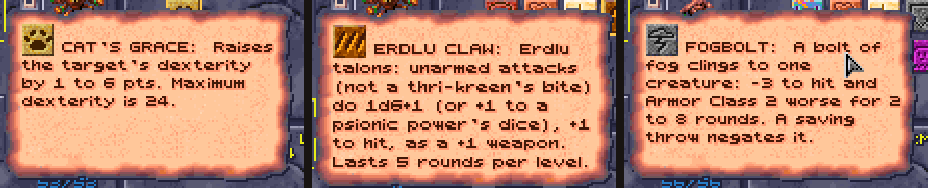
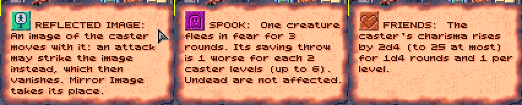
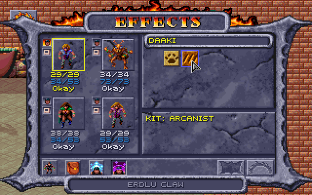
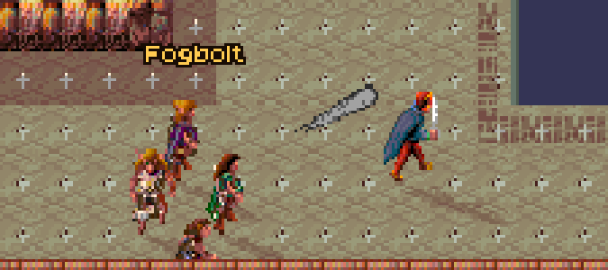
Switch: New spells: six for wizards (Cat's Grace, Erdlu Claw, Fogbolt, Reflected Image, Spook and Friends) and ten 6th-level priest spells (Heal, Harm, Blade Barrier...). Rules: how spells work (each spell in full), spell lists. How it works: DEVELOPMENT-CONTENT.md.
6th-level priest spells
Ten 6th-level priest spells, after AD&D's and Wake of the Ravager's, with the same switch: Heal, Harm and Restore Youth for druids and a Healer cleric (never Harm for a Healer), and each element's for its clerics and druids (Blade Barrier and Whirlwind for air, Wall of Thorns and Heartseeker for earth, Sunstroke and Fire Seeds for fire, Heartseeker and Water of Life for water). A cleric or druid gets them at 11th level, with AD&D's class tables (one 6th-level slot at 11th, two at 12th: only a druid reaches it). Each is built on a spell the game has, so the game's own code casts it; where they part from the books is in the player's guide. Their icons and the walls' pictures are Wake of the Ravager's, read from your copy (Wake of the Ravager); Restore Youth, which it hasn't, has the mod's own.
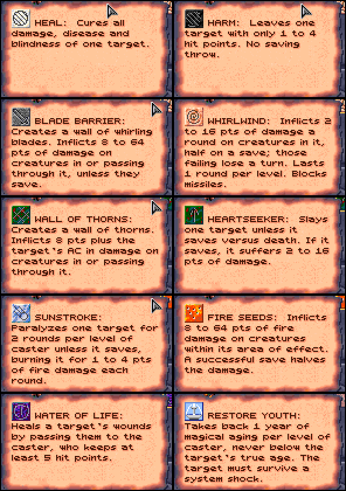
Rules: how spells work (each spell), spell lists, ages (Restore Youth). How it works: DEVELOPMENT-CONTENT.md.
Kalzith
A defiler slave in a pen of his own in the slave pens, there the first time the party enters them, with a face of his own. Talked to with respect, he sells six scrolls of spells the game has no scroll of, and what he wears; threatened, he must be won back. The story: People: Kalzith (spoilers).
Switch: Kalzith, a defiler slave in the slave pens who sells arcane scrolls. How it works: DEVELOPMENT-CONTENT.md.
Semyon
The arena's tied-up prisoner, once freed, helped and gone from the arena, is in a pen of his own in the slave pens, with things to say; and a party that breaks out with Scar takes him along. Dinos and the Trustee are asked about both new people. The story: People: Semyon and what Dinos and the Trustee say (spoilers).
Switch: Semyon in the slave pens after he leaves the arena, and breaking out with Scar. How it works: DEVELOPMENT-CONTENT.md.
The cooked vulture
The arena's vulture, plucked and cooked at the pens' campfire, is no use in the game; with the switch Dinos cooks it for the party: 100 XP each and a full rest. The scene: People: the cooked vulture (spoilers).
Switch: The cooked vulture: Dinos cooks it for the party (XP and a full rest). How it works: DEVELOPMENT-CONTENT.md.
Defilers' scrolls
A defiler may carry a spell scroll it was studying: each defiler in a fight has a 1 in 20 chance of carrying a scroll of a random preserver spell (the game's 69, and the new ones with the new spells on), found on its body when it dies. The defilers are those the game makes defilers, on either side: Balkazar, Wyrmias, Tara, the Troop Leader, the arena's Defiler, the Dark Spiders and the Spider Mother, the Hermit, and the thri-kreen Click-tunk!, Churr-te-tunk! and Cheee-smak-tunk!; Kalzith keeps his own. It is the game's own kind of scroll (3,000 a spell level to sell). Each defiler is rolled for once a fight, the arena's later ones too; a fight played again from a save is a new chance, and a game saved mid-fight keeps the scroll given. The dice log doesn't show the roll.
Switch: Defilers' scrolls: a defiler in a fight carries a scroll of a random preserver spell one time in 20, dropped where it dies. Rules: learning preserver spells. How it works: DEVELOPMENT-CONTENT.md.
New items
Items the game never had, or never placed: weapons of every type in more materials (short swords, bone and obsidian axes and great axes, metal and obsidian cahulaks...), twenty-two magic weapons (Shadowseeker, Kreenfang, Thornwall, Emberlash, Ironwhirl...), the rest of the bone scale set with a Bone Helm, rings and a cloak of protection, bracers of defense, two robes, the Warden's Plate, the Boots of Speed, the Cloak and Boots of Elvenkind and more, on the game's people, in its shops and chests; and six of Wake of the Ravager's weapons the game has none of (a two-handed sword, the lotulis, double spear and trikal, the javelin and darts) in the shops of Teaquetzl and Kel's caravan and on people of the like (the arena's gladiators, one of Scar's henchmen, the Drajian Guards, the Silt Runners, the White Sand Outlaws, Teaquetzl's Village Heroes and Elite Guards: the table), each with a weapon spec of its own: three of them in metal too (a two-handed sword and a lotulis at Melkor's in Gedron, a javelin on the slave pens' weapon rack), an obsidian lotulis for fire clerics and a bone great sword for water clerics (at Melkor's too), and magic ones along the way through the game, the weaker early (Darts +1 on the arena's defiler champion; a Double Spear +1 at the Fields' gate, a Trikal +1 with the elven slavers, a Lotulis +1 at the Hot Springs, a Javelin +1 with the Silt Sea's ssurans, a Lotulis +2 in the Lower Castle, a Great Sword +2 in the Upper Castle, a Trikal +2 at the way into the Wyrm Belly, a Double Spear +2 at the gladiators' camp, a Great Sword +3 in Balkazar's treasure room; an Obsidian Lotulis +1 on Dagger, the White Sand Outlaws' chief, and a Bone Great Sword +1 on Dakaren at the Silt Sea). Those carried by one of a group are given to one person there, an object of their own in the Loader's copy of the region, so they show only in a region the party hasn't yet entered in that game. People who fought bare-handed carry what the armed of their kind do. All but the arena's ring and Thornwall (which the Loader hands over itself, while it runs) are written into the game's own data each time the Loader starts it, so the game makes them with their people and chests and then keeps and saves them like its own. A thief can lift Pehtucl's ring, Shadowseeker, Gutterknot and Mindshard.
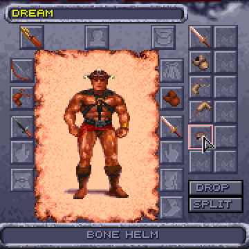
Switch: New items, magical and mundane: weapons, armour and other gear on the game's people, in its shops and chests, and the champions' arena bout after Scar's death. Rules: new items (what each is, spoiler-free), magic weapons by class; where each is, its numbers and its price, Items (spoilers), the mod's new items, Pehtucl's chest. How it works: DEVELOPMENT-CONTENT.md.
The champions' bout
With the new items: kill Scar in the arena, and on the party's next visit six champions from a distant arena, led by a Tohr-kreen with Kreenfang, come to try the pens' new king, armed and armoured as the party is. It comes once. The bout: People: the champions' bout (spoilers). How it works: DEVELOPMENT-CONTENT.md.
Game speed
The Loader's two speeds give DOSBox more of the computer's time than GOG's settings (7,000 cycles a millisecond) and run it DOSBox's faster way, which costs the computer less. In the game everything on the map moves a step at each tick of its clock, 96 a second, but a tick that passes while a picture is being drawn is a step lost: the more there is to draw (the whole party, shadows and dust), the slower everyone walks (how fast the party walks). Steady pace counts the steps lost on the map and, while more are lost than the unmodded game's pictures lose, leaves the next picture undrawn rather than the party slowed: a quick computer sees every picture, a busy screen fewer pictures. Fights draw every frame. At the default 35,000 cycles nearly every picture is drawn either way.
Switches (Game speed, from the next start): GOG's own (walking can be choppy with shadows and dust) (7,000 cycles), Faster: for an older PC (fewer pictures a second with the whole party in view) (20,000) or Fastest: the whole party walks at full speed, nearly every picture shown (the default) (35,000); and Steady pace: walking at full speed on the map whatever is drawn (a picture skipped rather than the party slowed).
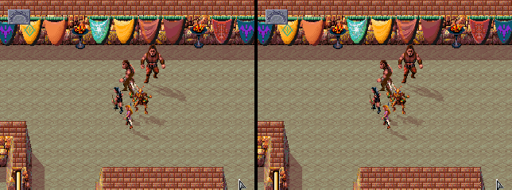
The same save and the same clicks at 20,000 cycles, recorded at 70 frames a second and played here at half speed, every frame kept: on the right, with steady pace, the party walks about a tenth quicker.
What each speed asks of the computer: suggested system requirements. How it works, with the measurements: DEVELOPMENT-SCREENS.md.
Picture and music
Two choices for DOSBox (the DOSBox 0.74 that comes with GOG's game), in the Options tab's Picture and music section, both from the next start.
Picture: how DOSBox draws the game's 320x200 picture larger, in a game window of twice the game's size or more and in full screen. A Single window is always plain; the window's size and the pointer's speed are the same with every picture.
| Picture | What you see |
|---|---|
| Plain (the default) | Every pixel of the game as a block of one colour. |
| Scanlines | A black line under each row of the picture, as an old monitor showed it. The picture is darker for it: at Double half of it is black, at Triple and in full screen a third. |
| TV | Each row fades downwards instead of ending in a black line: softer than scanlines, and darker than plain. |
| Sharp | Hard-edged pixels at any size: DOSBox stretches the picture to its window (and to the whole screen in full screen) without smoothing it. Drawn with OpenGL; if your graphics driver doesn't take to that, DOSBox falls back to its plain drawing by itself. |
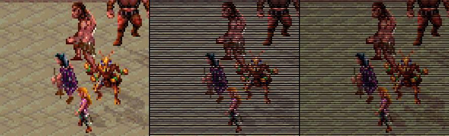
Plain, Scanlines and TV in a Triple window (a part of it, at its own size). Sharp looks like Plain at this size.
DOSBox has Scanlines and TV at twice and three times the game's size only, so a Quadruple window shows the twice-size one doubled and smoothed, and full screen stretches the three-times one to your screen (on a screen whose height isn't a multiple of the game's rows the lines can't all be the same thickness). Sharp is plainest to see at Quadruple and in full screen, where DOSBox smooths the plain picture as it stretches it.
Music device: where DOSBox sends the game's music. The game writes its music as General MIDI notes, and GOG's DOSBox has no synthesizer of its own: it hands the notes to Windows, which plays them on its default MIDI device (the "Microsoft GS Wavetable Synth", unless you have set another). If you have installed another MIDI device (a software synthesizer that plays a soundfont, a driver that imitates a Roland MT-32, a real sound module on a MIDI port), the list names it and you can pick it. The Loader comes with none and doesn't change Windows' settings: it only tells DOSBox which of Windows' devices to use. If the device you chose isn't there the next time (unplugged, or its program not running), the list says so, and the game would play without music until you choose again: DOSBox doesn't fall back by itself. The game still sends its General MIDI score whatever the device (on an MT-32 that is the wrong set of instruments; the game's own MT-32 score is chosen in its sound setup, which the Loader leaves alone), and sound effects and speech don't go to this device. Where the Loader can't read Windows' list (it runs on Linux, say, with the game's DOSBox under Wine), there is a field for the device's number in place of the list, 0 the first; a Linux DOSBox takes an ALSA port there, such as 128:0. Empty is the default. The device is for Shattered Lands only: Wake of the Ravager's music is its CD's audio tracks, which DOSBox plays itself, so the Loader starts it with the picture and speed chosen here but leaves its music as it is.
Switches (Picture and music, from the next start): Plain: every pixel of the game as a block (the default), Scanlines: a black line under each row of the picture, as on an old monitor, TV: a dimmed line under each row of the picture, softer than scanlines or Sharp: hard-edged pixels at any size, the stretching left unsmoothed (DOSBox's OpenGL); and Music device. How it works: DEVELOPMENT-SCREENS.md.
Wake of the Ravager
The 6th-level priest spells take their icons, and Blade Barrier and Wall of Thorns their pictures, from your copy of Dark Sun: Wake of the Ravager (GOG sells it with Shattered Lands), when the Loader finds it, and so do its weapons and the great axes their inventory icons (in the game's colours, each head in its material); without it they have icons of their own (the game's, recoloured) and the walls are the game's fire wall in grey or dark brown. Fire Seeds bursts as a fireball either way, a picture Shattered Lands has too. The Options tab's Wake of the Ravager (optional) section says where it was found, and Choose its folder... points the Loader to it (from the next start). Rules: requirements.
The sequel itself starts from the Loader too: Play Wake of the Ravager, beside Play Shattered Lands at the top of the window, or Play Wake of the Ravager.bat, starts it from that folder in its own DOSBox, with the mod's fixes and rules ported to it (below) and the dice log of its fights. When the Loader hasn't found it, the button says so and points to Choose its folder... (starting it).
Taking the party to Wake of the Ravager
The Options tab's Take the party to Wake of the Ravager... button puts the party of a Shattered Lands save into the sequel's roster, for a game that goes on with the same characters. Choose the save; the save itself is not changed. Then start Wake of the Ravager from the Loader and ADD them on its CREATE CHARACTERS screen. A window lists what came across.
- XP comes across up to Shattered Lands' cap. A member arrives with no more than its share of 749,999 XP (the whole for one class, an equal share for several, a human's the cap less its old classes' levels' XP), so XP banked past the cap in an older save stays behind; the report after the transfer says so (
XP 749,999 (Shattered Lands' cap: 2,000,000 in the save)). - Every item comes across. What the sequel has, it gets as the sequel's own item (as SSI's CHARTRAN does); the rest, which CHARTRAN turns into money bags, the Loader makes for the sequel, with its picture and name from your own Shattered Lands files: the mod's weapons, armour and magic items, and the game's quest items as keepsakes (carried and sold, no use in the sequel's story). Scrolls come across as the sequel's scroll of that spell (a wizard learns a spellbook's spell from its box outside a fight); a spell the sequel lacks makes a keepsake. Weapons a spell made (Shillelagh, Flame Blade, Spiritual Hammer) stay behind. The sequel's own weapons the mod brought into Shattered Lands (the two-handed sword, lotulis, double spear, trikal, javelin and darts, their metal and magic ones too) go back as the sequel's own weapon of that kind, and a spec in one of them stays that spec, for the sequel's own weapons of it (In Wake of the Ravager).
- The mod's items work as they did: who may wield them, the spells they cast on a hit or put on their wearer (taken off, the spell ends), the AC and saves of the rings, cloak, bracers and robes, the Veiled Robe's extra spells, the Boots of Speed, the girdles, the Amulet of Magic Resistance and the Tome of Understanding (+1 WIS). The sequel's own rules hold where they differ: Focus Heat burns for 2d6+6. The spell arrows (Chill, Shocking and Vampiric Arrows) cast their spell at the archer's preserver level, as in Shattered Lands; shot by a member with no preserver class they are plain arrows. The tome is read from its box (right-click it in the pack, then its icon) in a fight, on its reader's turn: outside a fight its icon does nothing.
- Hiding in shadows comes too, as in Shattered Lands: in a fight a thief or a ranger with no enemy beside them may hide and move silently, and then their next attack is from behind (a thief's, in melee with a light weapon, a backstab). The Cloak and Boots of Elvenkind work as they did: hidden 95% of the time under the open sky (90% under a roof), silent 95%. Tyr's streets, the forest, the Jann's desert, the Silt Sea islands and the clouds count as daylight.
- Thieves as in AD&D hold in the sequel too: a thief's skills are the Player's Handbook's average for the thief level plus the race's and Dark Sun's DEX adjustment (no more than 95 after armour), the inventory shows those numbers, and a backstab multiplies the weapon's dice only (Enlarge's enlarged dice), STR's bonus and the weapon's plus added once, on the round's first attack; an Assassin's backstab multiplies them once more (x3 to x6), as in Shattered Lands.
- A level cap by XP of its own in the sequel: 5,625,000 XP, shared between a character's classes as Shattered Lands' 749,999 is, in place of the game's stop at 15th; levels go on past the sequel's XP table (20th) to 30th by AD&D's tables, as far as the cap allows. Most characters of three classes reach 15th, of one or two higher (a fighter alone 30th, with another class 19th, with two more 15th; a preserver alone 25th, a druid 20th: the table). XP stops at the cap: each level up holds a character's XP at its share, so nothing is left over at the top. View Character names the class the next XP is for, and a level up past 20th says "21st", not "21th". THAC0 stops at AD&D's best (a warrior's 1, a priest's 8, a thief's or psionicist's 11, a preserver's 14), and a preserver's level up offers spells up to 9th level only: the sequel's four 10th-level spells stay the monsters'. A thief rolls its d6 for hit points to 10th (a psionicist to 9th), the thief skills go on by AD&D's table to 17th, spell slots to 30th (a preserver's 7 7 7 7 7 7 7 6 6), a druid's stop growing at 15th, a ranger's priest spells are the Player's Handbook's (cast at its level less 7, no higher than 9th), and the saving throws are the Player's Handbook's by class group and level: the game held every save at its table's last row, a warrior at 11/11/11/13/11 from 10th level and no save better than 8 (a bug Shattered Lands has too, for later).
- Shops as in AD&D hold in the sequel too: the party leader's CHA takes 5% (CHA 18) to 40% (25) off what a shop asks, a shop pays 60% of an item's price, and a magical item sold (a plus or a power: a scroll, a ring, a wand...) goes into the merchant's pack, listed again to be bought back. A shopkeeper's own discount in the sequel (Tasarla's for the Veiled Alliance) comes on top.
- Two weapons as in Shattered Lands: -2 in the main hand and -4 in the off hand, DEX's adjustment, one attack a round with the off hand; a ranger has none of it only in light armour (leather, or armour of no material), as in Shattered Lands, where the sequel let a ranger off in any armour. And over the figures, a spell's charge used floats its count as in Shattered Lands (
Armor: 7 left). - Psionic Blast's imagined wounds come back as a fight ends in the sequel too ("Seneca shakes off Psionic Blast's imagined wounds as the fight ends"), and until then a blow that would kill the member knocks it out instead. The dice log's saving throws there show the d20 rolled and each modifier by name, as in Shattered Lands (
d20 = 13 +1 Ring of Protection -1 WIS 6 +1 CON 19 = 14, needs 13), with a natural 1's line that went missing before, and the creation screen's rolls each score's four 4d4 (best of four 4d4 (12, 9, 8, 7) = 12, +4 = 16). Its attack lines break the THAC0 down as Shattered Lands' do (THAC0 13, +3 STR, -2 stone, +2 difficulty = 10), the cahulaks' heads named (-2 cahulaks, main head at DEX 12); a Battle Dancer in light armour has no head penalty with the cahulaks, as in Shattered Lands. - Looting with T and Shift+T, selling with S and M, U and I work in the sequel too (started from the Loader). A body's window opens with the eye (right-click twice). The items go into the backpacks and the dice log names them (
Ar'Anda takes Bow, Stone Lotulis, Bone Brigandine Armor (3), Arrow). S sells the plain gear of the member on show and shuts the shop back to the talk. M is the sequel's own overhead map (its O). No purse sound plays in the sequel. Without the Loader, T and S are the game's keys and leave the window or the shop open. - The sequel's messages are seen: its message box (a scroll's YOU LEARN THE SPELL and the rest, a shop's I COULDN'T SELL THAT) was never on screen, drawn and gone at once; now it stays for the time the game's options set (five seconds at first) while the game waits, and with it a wizard's INT's YOU FAIL TO LEARN THE SPELL and TOO MANY SPELLS OF THAT LEVEL.
- The Loader's Dialogue and Journal tabs follow the sequel: every conversation with the replies offered and the one chosen (
You chose: Who are you?), the speaker named once a talk shows whose face it is (Caravan Master; or name it with Name speaker..., kept apart from Shattered Lands' faces), and each message box in the journal and in the dice log (Message: YOU ALREADY KNOW THIS SPELL). The sequel's journal is one of its own from the Loader's start: it doesn't follow the sequel's saves as Shattered Lands' does (a game loaded there goes on in the same journal). The Spells and Memory tools tabs read the sequel's spells and records. - Kits, weapon specs, spells and the starting age come across with each character, on its character sheet as in Shattered Lands (the Elementalist's second sphere and the new spells known with the kits). The kits' rules for fights and play work there: AC, to hit and damage, the weapon skills a kit gives (a Battle Mage's, Crusader's and Mind Warrior's expertise, a Justifier's specialization, a Myrmidon's second weapon), saves, thief skills, backstabs, movement, the two-weapon penalty and initiative, the Seeker's and Justifier's casting level, the Elementalist's second sphere's spells (known, cast and at its cleric level), the kits' spell slots (the Battle Mage's and Crusader's one fewer, the Elementalist's a level behind, the Seeker's, Justifier's and Shinobi's own tables: Kits' spell slots), the kits' casting levels (an Arcanist's, Spirit Caller's and Wasteland Seer's), cures (a Healer's, Lifebinder's and Rescuer's) and Cause Wounds (a Wilderness Avenger's), the spells a kit knows (a Healer's sphere of the cosmos, the healing or harming spells a kit never knows), and the Battle Dancer's dance and Wild Fighting as a fight starts. The Effects screen names each kit (
KIT: RAVAGER). A new character takes a kit in the sequel as in Shattered Lands: KITS on the creation panel opens the KIT page (Choosing a kit), and a human with no kit is asked for one on the game's menu right after DUAL. What else kits do to spells and psionic powers (PSP costs), gear and hit dice doesn't carry over yet (a Shinobi has its slots, but no spells to cast with them). The creation screen has STORE and RECALL too, and a new character gets fuller starting gear from the sequel's own items (a sling, leather where it is free, a weapon in hand it can use: a fire cleric's obsidian dagger), given before the character is first shown and written to the roster. Its weapon starts in the weapon hand: the sequel's own gear put a new fighter's +1 long sword (and a cleric's, druid's, preserver's or psionicist's weapon) in the left hand, which swings once a round whatever the weapon specs, the fighter's behind its shield in the right; now the weapon is in the right hand and the shield in the left. A new fighter, gladiator or ranger picks its weapon specs on the weapon window after DONE, as in Shattered Lands (In Wake of the Ravager). The weapon specs work there: a specialist's +1 to hit and +2 damage, mastery and grand mastery, a warrior's plain rate with a weapon not chosen and a specialist's rate of fire, in all twenty-two weapon specs: the sequel's Twohand Sword and Crystal sword are two-handed swords, its Lotulis, Double Spear, Trikal, Javelin and Darts those weapon specs, as the mod's own in Shattered Lands (In Wake of the Ravager). The screens show them as in Shattered Lands: the inventory's and View Character's DAM lines the attacks a round and the damage the attack has (and the off hand's one a round), and the Effects screen's lower panel each one's weapon kinds (the Effects screen). The Look box's whole description of a monster comes up in the dialogue window as the box closes there too. Choosing an enemy works there as well: in a fight, on a party member's turn, Tab chooses the nearest enemy (then the next; Shift+Tab goes back), a red ring on the ground marks it, the dice log names it with the chance to hit (Chosen with Tab: Draxan (12 HP), needs 14+ (35%) - Enter attacks it), and Enter attacks it; the chance to hit floats over the enemy under the pointer too. An enemy chosen off the screen is scrolled into view, so Enter reaches it. (Without the Loader, Tab opens the sequel's own menu, as it does out of fights.) The Loader's copy of the sequel gives every character sheet six more bytes for them, its own characters' too. - Squares in reach, F10 and Alt work in the sequel's fights too. On a party member's turn small crosses mark the squares they can still walk to, and R hides or shows them. After the last step the sequel opens its own END MOVE menu (GUARD, WAIT, END TURN), and F10 does nothing while it is up: Escape closes it, and F10 then puts the member back where the turn began, with the move to walk again (
F10: Lex's move taken back (can walk again)). Without the Loader the sequel gives the points back but not the walk, so a click goes nowhere. A member held where they stand (Paralyzed, or Cannot Move) stays there. Out of a fight, holding Alt rings what can be used in gold and names it: things to take, doors, bodies to search, people to talk to. - Preservers' first spells and psionic powers at creation are picked in the sequel too. Its own grants are not Shattered Lands': a new (7th-level) preserver is given ten spells, some drawn at random (four of 1st level, three of 2nd, two of 3rd, one of 4th), and a psionicist a fixed eighteen powers, anyone else four or five of its discipline. With the Loader, DONE opens the game's CHOOSE A SPELL for as many as it would have given, level by level from 1st (the window's pages no higher than the level being picked), then PICK A PSIONIC POWER for the powers (a psionicist's from all three disciplines, anyone else's from its own; Mind Blank and Detonate given as the game gives them). EXIT leaves the rest to the game's own, each spell level's first; EDIT on a member that keeps its classes and disciplines keeps its powers.
- Start the sequel from the Loader. Each start makes the roster and the saves in the sequel's folder the Loader's (each file kept first as NAME.42H). Started by itself, the sequel can't read them, nor shows the Loader's items (it shows money bags), and it can stop in a fight on the turn of a member with a kit. To play the sequel by itself again, run
python -m dsloader.ravager narrow FOLDER(FOLDER: the sequel's) from the Loader's folder: the roster and the saves become the game's again, the weapon specs dropped (each kept first as NAME.48H); the Loader makes them its own again at its next start. - Time passes between the games: 3 to 12 months, rolled once. Each member ages a year with a chance of the months in twelve, with the age rule's usual effects.
- The roster: the sequel's own is kept first as CHARSAVE.GFF.BAK (the first time). A character taken across before takes its old place again; the others take free places. With too few free, the Loader says so: delete characters in the sequel first.
Saves
The Options tab's Saves section (quick save and autosave, and the named saves), and the room the Loader makes for more saves and characters (always on).
More saves
The game's save and load window holds 10 saves; with the Loader it holds 40, on four pages of ten, and a fifth page, QUICK, that fills itself (quick save, quick load and autosave): the PAGE 1 to PAGE 4 and QUICK buttons under EXIT, or PgDn and PgUp, show a page, and the window opens on the page last shown (never on QUICK by itself). In the load window an empty page shows with LOAD greyed. Page 1 is the game's own SAVE01.SAV to SAVE10.SAV (in the game folder or GOG's cloud_saves); pages 2 to 4 are SAVB.., SAVC.. and SAVD.. and the QUICK page SAVQ.. beside them, which the game started without the Loader doesn't see.
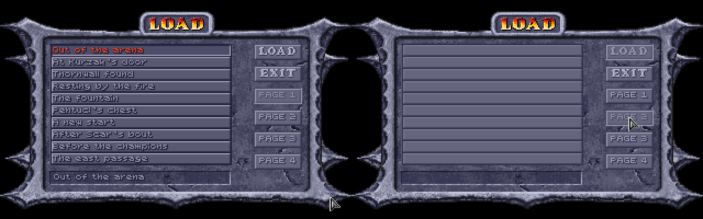
How it works: DEVELOPMENT-SCREENS.md.
Quick save, quick load and autosave
On the map, F5 saves the game at once: no window, no name to type. The game stands still for a third of a second, Quick save floats over the leader, and the dice log says which (Quick save: "Quick - Day 3, 14:20" (the QUICK page, slot 2)). F9 opens the game's own LOAD window on those saves with the newest chosen: Enter (or LOAD) loads it. And the game saves by itself a few seconds after the party comes into another area (Auto - Day 1, 16:31 - The arena) and after a fight ends (Auto - Day 1, 00:56 - after a fight; at most one a minute, so the arena's waves don't fill the page). An autosave due during a quick save or quick load waits until the game is back on the map and ready. When the Loader detects a loaded save, it drops any autosave that was waiting.
All of them are on a fifth page of the save and load window, QUICK (the button under PAGE 4, or PgDn past page 4): its first five rows are the quick saves and the last five the autosaves. Each kind fills its empty rows and then writes over its oldest, so the last five of each are kept. They are saves like any other, and load in the game started without the Loader's window too.
Nothing is saved in a fight (the game itself saves none there: F5 says so in the dice log), nor while a window, a talk, a screen or a menu is up, where F5 and F9 stay the game's keys; the game's own F1 (its SAVE window) and F2 (LOAD) work as always. A save you want to keep belongs on pages 1 to 4, where nothing is written over: load the quick save and save it there. For the same reason the QUICK page's saves are not copied to Named saves, and the save and load windows never open on the QUICK page by themselves: once the window is shut it is back on the page of 1 to 4 it showed last. With less than 4 MB free on the disk no quick save or autosave is made, and the dice log says so.
In Wake of the Ravager (started from the Loader) F5, F9 and the autosaves work the same way, in the sequel's own save and load window: F9 opens its LOAD window on the quick saves (SAVQ01.SAV to SAVQ10.SAV beside the game's SAVE..), and once it is shut the window is back on the game's own ten (the sequel's own F1 and F2 windows never open on the quick saves). Its autosaves have shorter names, to fit its narrower rows (Auto Day 1, 09:05 Mines 1, Auto Day 1, 00:06 fight). Each quick save keeps its own part of the map's limits, which the sequel stores beside a save, so loading one never takes another save's. There is no camp in the sequel, so no camp autosave. While the switch is on and the Loader is there, F5 is the quick save, not the sequel's own F5 (the sound effects on and off: F4 and the game's menu still have the music, and the menu the sound effects); with the switch off or without the Loader, F5 is the game's again.
Switches: Quick save and quick load: on the map, F5 saves at once on the QUICK page of the save window, and F9 opens the load window there (off, F5 and F9 are the game's own: F5 draws the view again, F9 breaks the camp of the game's rest, where the Loader leaves both to the game anyway) and Autosave: on coming into another area and after a fight, on the QUICK page of the save window. How it works: DEVELOPMENT-SCREENS.md.
Saves under their names
Only the game's list says which file is which save. While the Loader's window is open (not with the .bat files that start the game without it), it copies the manual save slots under the name you typed for it, into its own Named saves folder (Page 2 slot 05 - Before Scar's battle.SAV); saving over a slot replaces that slot's copy. Open the folder opens it, and Put a save in a slot... copies a named save (or another Shattered Lands save) into the page and slot you give, asking first if one is there, and keeps the save it replaces as Replaced - Page 1 slot 05 - NAME.SAV.
Wake of the Ravager's saves get the same: its ten manual slots are copied into Named saves (Wake of the Ravager) (Page 1 slot 02 - In Tyr.SAV), the Wake of the Ravager's button opens that folder, and a sequel's save put back into a slot is made the Loader's (the bigger character sheets) as it goes in (a game already running lists it from its next start).
Buttons: Open the folder, Put a save in a slot... Rules: compatibility with older saves. How it works: DEVELOPMENT-SCREENS.md (saves under their names).
More characters
The game keeps up to 19 characters made with CREATE CHARACTERS (and those dropped back to the roster), and refuses a 20th; with the Loader it keeps 29, and the ADD window scrolls through them all. They are in the game's own CHARSAVE.GFF, numbers 1 to 29: the game started without the Loader reads only 1 to 19, and the others come back with the Loader (the game saves a new character under the highest free number, so the first ten after the 19th go to 20 to 29). The patched game also fixes DELETE in a scrolled roster and New characters' thief skills (bugs fixed). How it works: DEVELOPMENT-SCREENS.md.
Expanded features
New things to do in play, always on.
The leader's CHA at shops
The party leader's CHA lowers what shops ask, 5% from CHA 18 to 40% at 25, and shops pay 60% of an item's price, so nothing can be bought and sold back at a profit; the game asked and paid the full price whoever traded. Friends raises the leader's CHA for a while.
Always on (no switch), with buying back. Rules: ability scores (CHA's table). How it works: DEVELOPMENT-RULES.md.
Buying back magical items
The game destroys whatever the party sells. With the mod a magical item sold (a plus or a power) goes into the merchant's pack, offered at its price less the CHA discount, to be bought back; anything else is gone. How it works: DEVELOPMENT-RULES.md.
Magic weapons for every spec, and the mod's gear
Wake of the Ravager has no short sword at all and no magic pick, and few magic great axes, cahulaks, staff slings and polearms. The mod adds 14 magic weapons, +1 to +3, plain-named as the game's own, and puts the 15 plain items the mod brought to Shattered Lands (bone, metal and obsidian short swords, daggers, maces, axes, great axes, picks, polearms, cahulaks and the Bone Helm) in the sequel's shops, on its people and in its chests. Pictures are Shattered Lands', from your copy; the magic ones have a few fire-coloured pixels, which don't shimmer as Shattered Lands' do.
| Item | Where |
|---|---|
| Short Sword +1 | Notaku's stall, Tyr |
| Short Sword +2 | a Draxan in Tyr |
| Short Sword +3 | a body in the Crypt |
| Pick +1 | the receptionist who sells picks |
| Pick +2 | a crate in the third mine level |
| Pick +3 | the silt giants' leader |
| Great Axe +1 | a Draxan in Tyr |
| Great Axe +2 | a Draxan in the Pyramid |
| Cahulaks +1 | Alhena, the Jann's lands |
| Cahulaks +2 | the Runner, the Yuan-ti tunnels |
| Polearm +1 | a guard at the Veiled Alliance's headquarters |
| Polearm +2 | a Draxan, the third volcano level |
| Staff Sling +1 | the ranged-weapon stall, Tyr |
| Staff Sling +2 | Sureshot, in the forest |
The weaponer sells all 13 plain weapons; the armourers the Bone Helm; other stalls a few each. A game saved before has them in its shops too: the Loader stocks each seller once, as you meet it, and what you buy isn't put back (dsloader/shopstock.py); its other people and chests keep what they had. The Bone Helm gives AC 1 with Helms give AC 1, as in Shattered Lands (a transferred one too). Built by the Loader (dsloader/ravgear.py) when the Shattered Lands folder is set.
Improved thieving
Skills by the Player's Handbook's table, hiding and moving silently to backstab (rangers to attack from behind), a cloak, boots and belt that help, and pockets to pick, all always on. Rules: thieves' skills and picking pockets, hiding in shadows.
Thief skills from AD&D's table
A skill is AD&D's average for the thief level plus the race's and DEX's adjustments, at most 95, where the game's came out high (a 3rd-level elf with move silently 66). A backstab multiplies the weapon's dice only, STR and the plus added once after, on the round's first attack. A lock the thief failed, or a pocket it was caught at, waits for a thief level gained (Player's Option: Skills & Powers); another thief may try at once.
Always on (no switch). Rules: thieves' skills, backstabs; the game's, how the game works out thief skills. How it works: DEVELOPMENT-RULES.md.
Hiding in shadows to backstab
A thief whose turn comes in a fight with no enemy beside it tries to hide in shadows, then to move silently; with both, its next attack that turn is from behind, a backstab with a weapon that can. Thieves' hiding is halved in daylight; rangers hide too, for an attack from behind, halved indoors. The game never rolled hide in shadows. A worn cloak, boots and belt help.
Tezral hides in shadows: d100 = 21, needs 27 or less (54, halved in daylight) -> hidden
Tezral moves silently: d100 = 30, needs 54 or less -> unheard: their next attack this turn is from behind (a backstab with a weapon that can)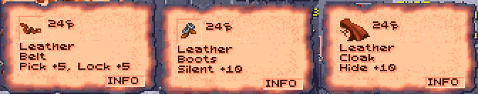
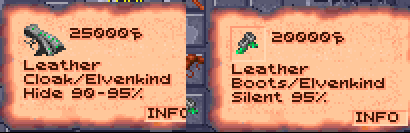
Always on (no switch), with what worn gear adds: a cloak 10 to hiding, boots 10 to moving silently, a belt 5 to picking pockets and opening locks (plain ones cost 24; the Cloak and Boots of Elvenkind do more: their numbers). Rules: hiding in shadows, the kits that hide their own way in Kits. How it works: DEVELOPMENT-RULES.md.
Picking pockets
A thief's Pick Pockets button (a purse, where a priest's Turn Undead is on the USE screen), then a click on anyone in sight, not in a fight: made, one small thing goes into its backpack (or coins, the last try); failed, a move silently roll to slip away, else caught. The game has one pocket to pick, in the Trustee's talk. Three weapons some people carry are worth 200 XP each to lift.
Always on (no switch). Rules: thieves' skills and picking pockets. How it works: DEVELOPMENT-RULES.md.
Graphics
What the mod draws on the game's map, always on. The magic items' icons and the spells on the ground are always on too.
Elves and half-elves
Elves have pointed ears, walking and fighting, beside any helm. Half-elves have their own look (the game draws them with the human pictures), from the game's pictures in the colours the party's figures use: the man built like the elf man, a little broader, fair-haired in a leather jerkin and green trousers; the woman a little slimmer than the human woman, golden hair in a bun, a purple cloak and red boots. Anything worn is drawn over these in its own colours. Cilla, in the game's own party, is an elf the game gives the half-elf woman's figure: with the mod she has the elf woman's, in a new game and in one already begun (from the next area or load).
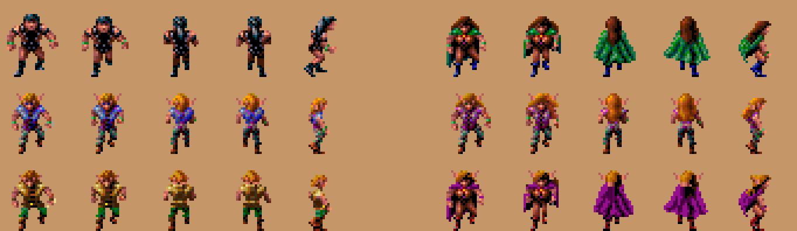
Always on (no switch), both. How it works: DEVELOPMENT-CONTENT.md.
What the party wears
The game draws each race and sex the same whatever they carry; the Loader keeps the artist's pictures and adds the gear, frame by frame, walking and fighting, changing as soon as the gear does:
| Worn | Shown |
|---|---|
| Weapons and shields | each weapon type its shape (dagger, sword, club, mace, axe, polearm, gythka, staff, a round shield) in its material's colours (wood, ivory bone, stone, obsidian, metal); worn at the belt or carried upright while walking, in the hands and swung in a fight, the shield on the arm |
| Bows and slings | the bow and quiver on the back (the game draws the bow when shooting), a sling or chatkcha at the hip |
| Armour | the character's own clothing recoloured toward its material, shade for shade: the chest piece above the waist, arm pieces at the wrists, leg pieces below the waist; on figures drawn mostly bare (the mul, the dwarf man) only straps and loincloth, so little shows |
| Helms | a circlet at the brow: a feather on leather, a dark stone on iron, low spikes on bone |
| Cloaks | the human woman's cloak, fitted to the wearer, under the hair, in the cloak's colours; from the front it hangs behind |
| Boots and belts | the feet and the waist recoloured (Boots of Elvenkind in soft green) |
| Magic | the spells' weapons whole in the game's animated colours (Flame Blade, Shillelagh, Spiritual Hammer); any other magic weapon or shield glints along its edge, and magic armour, cloaks, helms, boots and belts have a scatter of sparks, in its icon's colour |
| Age | the hair greys with age |
A thri-kreen shows only weapons and shields; two party members of the same race and sex each show their own. New outfits go into room the game's picture store already has, so gear can be changed as often as you like in one area (without that, 30 to 60 changes filled the store and figures vanished until the next area; the game's own limit of 300 picture slots is a bug mended apart).
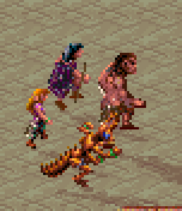
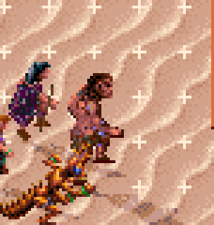
Always on (no switch). How it works: DEVELOPMENT-CONTENT.md (and where the picture store can't be reached, on Dark Sun Recompiled).
Shadows
Every living figure on the map (the party, the people, the monsters; not the dead, nor items) casts a soft see-through shadow on the floor, its outline laid long toward the lower right, as the walls' own shadows fall. They are drawn on the floor first, so a shadow never covers a figure or a wall.
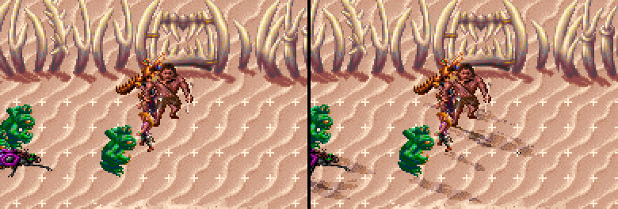
Always on (no switch). How it works: DEVELOPMENT-CONTENT.md.
Dust
Anyone walking on sand or dirt raises little puffs of dust behind their feet, which spread, rise a little and fade in about a second, behind the walls and figures.
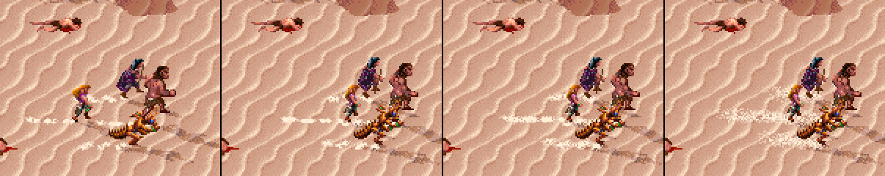
Always on (no switch). How it works: DEVELOPMENT-CONTENT.md.
See-through figures
A thief or ranger hidden in shadows and unheard in a fight, and anyone invisible (the Invisibility spells; among the game's foes only the psurlons), is drawn half see-through, the floor, a wall or a shadow showing through. The hidden thief turns solid with the attack that gives it away, or as the turn ends. An invisible enemy is drawn solid while one of the party detects invisibility (the spell, or Shadowseeker readied). The game draws the invisible like anyone else; being unseen only makes them harder to hit (4 worse) and better at saving against a spell aimed at them, for whoever can't detect invisibility.
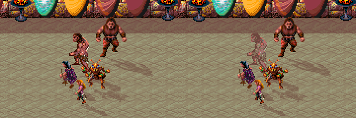
Always on (no switch). How it works: DEVELOPMENT-CONTENT.md.
Controls
The mouse and keys in the game, always on (the red ring's choice is in the Options tab's In the game section). The keys T, S, M, U and I are always on too.
Choosing an enemy: Tab, Enter and the rings
In a fight, on a party member's turn, Tab chooses an enemy, the nearest first, then the next (Shift+Tab goes back): a red ring on the ground marks it, the view scrolls to it if it is out of sight, and the log names it. Enter then attacks it, as clicking on it does (walking up first when it is out of reach), even where another figure stands in front of it: attacking without aiming the mouse at all.
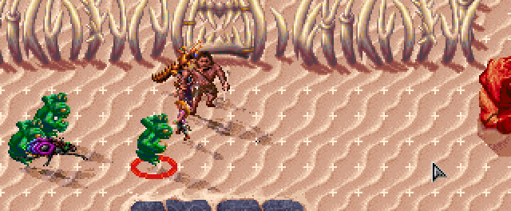
Always on (no switch); the ring has a choice in the tab's In the game section: A red ring on the ground in a fight: ... none or ... under the enemy chosen with Tab (the default). How it works: DEVELOPMENT-SCREENS.md.
Scrolling the map
Press the mouse wheel on the map and move the mouse: the map moves with the pointer, as if dragged, in fights too. The game still scrolls when the pointer touches the screen's edge, and brings the view back to whoever's turn it is. The view can't be zoomed: the game draws a 320 by 200 screen at one scale, built into its drawing code.
Always on (no switch). How it works: DEVELOPMENT-SCREENS.md.
The view in fights
The game moved the view after a figure walking in a fight as soon as it came near the screen's edge, a step at a time, so the view drifted after every figure that walked. Now it moves only once the figure has walked off the screen, to bring it back. Out of fights the view follows the party as the game has it.
Always on (no switch). How it works: DEVELOPMENT-SCREENS.md.
The pointer in scenes, and where it starts
The game shows no pointer in its intro and other scenes (the logos, the king's decree, the arena gate), and only a key skips them; now the game's own pointer follows the mouse there, and a click skips a scene as a key does (between a scene's steps, so a long still picture plays to its end). The game also left the pointer at the screen's right edge, moving half as far up and down as across; now it starts in the middle, stays where you leave it from one screen to the next, moves as far each way, and in a window as fast as your desktop's pointer, fine enough to place an item where you mean.
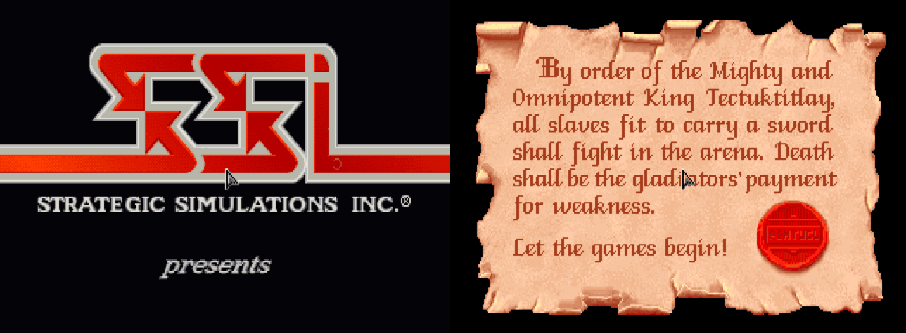
Always on (no switch), both. How it works: DEVELOPMENT-SCREENS.md.
The whole party in view
The game shows the party on the map as one figure, the leader, until you press 5, and gathers it back after every fight and in saves made that way. With the mod a game starts and loads with the whole party in view, and stays so after a fight. 6 still gathers the party into the leader, until the next fight or load.
Always on (no switch). How it works: DEVELOPMENT-SCREENS.md.
Spells on the Effects screen
On the Effects screen, a click on an effect's icon ends it in the game, so a stray click loses a spell. With the mod a click leaves a spell on; a psionic power still ends, as that is how a power is stopped. What else the screen shows: the Effects screen.
Always on (no switch). How it works: DEVELOPMENT-SCREENS.md.
Always on
What the mod does with no switch, in games started from the Loader or its .bat files: more on the game's own screens, in its own lettering and windows; the picks at creation; its keys (T, S, M, U and I); the magic items' icons and the spells on the ground; and the game's bugs mended. Elsewhere: the two-weapon penalties, the pick's footman's dice and Legcrusher at the fountain.
These are always on too, each in its own entry above: the combat log in the game, most rule changes (all but hit dice, half-giants' two-handed weapons and helms' AC), weapon specialization, STORE and RECALL, and all of expanded features, graphics and controls (the red ring keeps its choice).
THAC0, saves and thief skills
The inventory screen's right-hand panel shows, in the game's own lettering: above STR the THAC0 and the five saving throws (PPD, RSW, PP, BW, SP); each weapon's THAC0 at the end of its damage line (T14); for a character with thief levels six thief skills (PICK, LOCK, TRAP, SLNT, HIDE, CLMB), and for a ranger its SLNT and HIDE; DEX's reaction adjustment (REAC +4) and defensive adjustment (DEF -5); and with ages the AGE. View Character gets the saves under the item icons, and MOVE and THAC0 beside HP and PSI. For a character of several classes, its experience line names the class that goes up next (EXP:87230 (90000 Pr)).
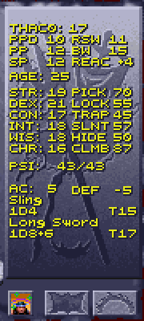
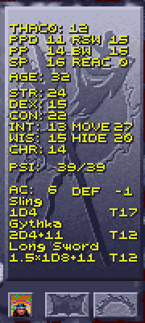
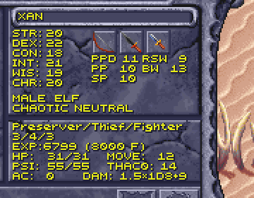
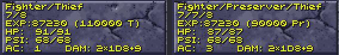
They are the numbers as they stand, worked out as the game's own attack and saving throw routines do, and brought up to date each time the screen is drawn (a spell that starts or ends shows the next time the screen opens):
- THAC0: the classes' best (a kit's warrior THAC0 with its chosen weapon) less STR's to-hit adjustment (DEX's for a missile weapon), the weapon's plus or its material's penalty, its weapon spec's to-hit, a kit's, the two-weapon penalty for the hand, Bless and Prayer, Curse, Slow and Graft Weapon. The THAC0 at the top is the main weapon's. What depends on the target (from behind, a Blurred target) is left out; the dice log shows it on each attack.
- Saves: the d20 each needs, less what the game adds to every save (rings and the cloak of protection, Bless, Prayer, Barkskin, Spirit Armor but on PPD, the Save penalty, and on PPD CON's adjustment). What depends on the spell or its caster (WIS against mind spells, Protection from Fire...) is left out; they show between 2 and 20.
- Thief skills: as they stand, with no equipment penalty (how the game works them out), at most 95, 0 for a skill an effect rules out or when the thief isn't Okay, 100 for one an effect makes certain; a worn belt's 5 and, with hiding, a cloak's and boots' 10 included. The situation's bonus (a hard lock) is left out. Hear noise and read languages are left out for want of room.
- REAC: −6 at DEX 1 to +5 at 24-25, the number initiative uses and the two-weapon rule adds. DEF: +5 at DEX 1 to −6 at 24-25, counted in AC already, and the other way round on saves against what can be dodged.
- The next level's class: each class is its first letter (C, D, F, G, R, T), the preserver's Pr and the psionicist's Ps; two that go up at the same XP are both named (
(20000 Pr/T)), and a class at its highest level never is. A character of one class, or a human, shows the line as the game has it.
The Characters tab shows the same THAC0 and saves; without the Loader the game's own numbers come back. How it works: DEVELOPMENT-SCREENS.md.
The creation screen
Beside the game's own scores and hit points the character creation screen shows: THAC0 right of the hit points (THAC0: M18 R19, melee with STR's to-hit adjustment and ranged with DEX's, as the classes and kit stand, no weapon counted), so a click on STR or DEX shows at once what it does; AGE under it (ages); SUM under CHR (scores as rolled); STORE and RECALL (above, with its picture); and KITS at the end of the disciplines' or spheres' panel (choosing a kit). After DONE comes the weapon window for a warrior's weapon specs (choosing at creation). How it works: DEVELOPMENT-SCREENS.md.
Spell slots on the USE screen
The USE screen shows, at the top of the panel under the spells, how many spells of the level on show the selected character can still cast and the most after resting, for the list on show: SPELLS LEFT, then WIZ on the MAGE list or PRI on the CLERIC list, as left/most (PRI 3/5). The numbers are the Characters tab's, WIS bonus included; they go down as spells are cast and back up after resting. A preserver in armour reads NO SPELLS IN ARMOUR instead.
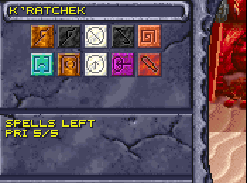
Rules: spell slots. How it works: DEVELOPMENT-SCREENS.md.
Charges in item boxes
An item that casts a spell with charges (the wands, the Storm Ring, the necklaces) shows how many it has left in its item box (right-click it on the inventory screen), counting down as it's used. A cloak's, boots' or belt's box shows what it adds to thief skills. A plain weapon of a weaker material shows its to-hit penalty ("Hit -3" wood, "Hit -1" bone, "Hit -2" stone and obsidian; not for clubs, staves or the chatkcha, nor metal or a weapon with a plus), and the Spellarcher's Fine Bow "Hit +1".
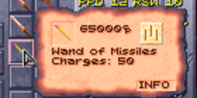
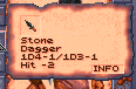
Rules: weaker materials. How it works: DEVELOPMENT-SCREENS.md.
The Effects screen
The Effects screen (Current Spell Effects) shows more in its lower panel and under the pointer:
- Kits and weapon specs: each kit (
KIT: RAVAGER; the game's own party's features with no prefix,SHADOW-WALKER), a Shinobi's chance to read a scroll (READ LANG. 35%), then the weapon specs, a page at a time (changing class has pictures). - Charges left, with the pointer on a spell that lasts a number of uses: IMPROVED AC (4 CHARGES) for Armor, MIRROR IMAGES (3 CHARGES), REFLECTED IMAGE (2 CHARGES).
- Enlarge's damage: ENLARGED (+90% DICE) from a 9th-level caster (the rule). The inventory's damage doesn't count it; each hit's dice log line does. A second Enlarge on someone enlarged adds nothing.
- The armour spells' AC: BARKSKIN (AC 3) from a 12th-level druid (Barkskin 6 less a quarter of the level, Flesh Armor 10 less the psionicist level, Magical Vestments 5, 1 better for each 3 levels above 5); armour already better is kept.
- A click on a spell's icon no longer ends it: spells on the Effects screen.
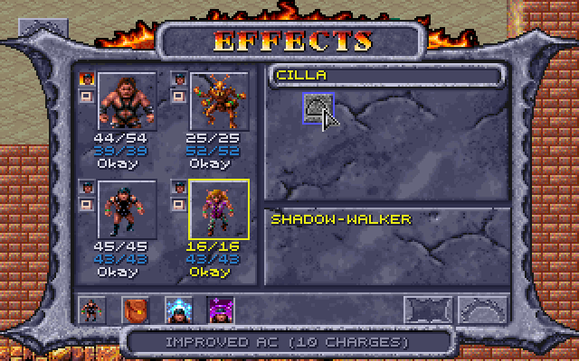
How it works: DEVELOPMENT-CONTENT.md.
What a scroll says
Clicking a scroll's spell icon in its item box gives the result on the line under the paper doll: YOU LEARN THE SPELL, YOU ALREADY KNOW THIS SPELL, YOU FAIL TO LEARN THE SPELL, TOO MANY SPELLS OF THAT LEVEL, or a Shinobi's YOU CAN NOT READ THE SCROLL and THAT IS NOT A SHINOBI SPELL. The game wrote these there too, but they never reached the screen. In Wake of the Ravager the same messages come up in the game's own message box over the inventory, for a few seconds. How it works: DEVELOPMENT-RULES.md.
No manual check
The game's copy protection is gone: leaving the sewers the first time, the game has a dragon ask for a word from the manual, and three wrong answers kill the party. Started from the Loader, the dragon doesn't come, and the game goes on as if it had been answered. How it works: DEVELOPMENT-SCREENS.md.
Preservers' first spells
A new preserver picks its starting spells on the game's CHOOSE A SPELL window when DONE is clicked, where the game handed out Grease and Magic Missile (and more at higher starting levels): two 1st-level spells at 1st level, four at 2nd, four 1st-level and two 2nd-level at 3rd; a multiclass preserver too, and a Scholar one more each level. A human who becomes a preserver picks its first two the same way. EXIT (twice) ends the picking, the rest being the game's own in its order; the character is already saved, so EXIT can't take you back. Rules: the preserver, learning preserver spells. How it works: DEVELOPMENT-RULES.md.
Psionic powers at creation
Every new character picks its psionic powers at DONE, on the game's PICK A PSIONIC POWER window, where the game always handed out the same ones: anyone not a psionicist picks four of its chosen discipline's, a psionicist as many as the game gave for its starting level (4 at 1st, 5 at 2nd, 10 at 3rd) from all three. Everyone still knows Mind Blank. EXIT (twice) leaves the rest to the game's own; EDIT on a member that keeps its classes, race, kit and discipline keeps its powers, and the game's own party keeps the game's. Rules: the psionicist, psionics. How it works: DEVELOPMENT-RULES.md.
Looting a body: T and Shift+T
With a body's (or a chest's) window open, T takes everything in it and Shift+T everything but plain weapons (no plus and no power). Each thing goes into the first backpack, in the party's order, with a free cell; what doesn't fit stays, and so do the plain weapons for Shift+T (press T to take them too). The purse jingles and the dice log says who took what (Lex takes Slavepen key, Grapes, Guava (4), Obsidian Bloodwrath +1). Without the mod: two clicks a thing, a body at a time. How it works: DEVELOPMENT-SCREENS.md.
Selling plain gear: S
On a shop's screen, S sells everything plain in the backpack of the party member on show: weapons, armour, shields and clothing with no plus and no magic. What the member wears or holds stays, and so do ammunition, anything of metal, magic, keys, scrolls, food, water, gems and what the shop won't buy. Each thing fetches what the shop would pay for it alone (60% with shops as in AD&D); the shop closes back to the merchant's talk and the dice log lists the sale (Gerakis sells 9 things for 95 ceramic pieces: Wooden Club 1, Bone Axe 4, ...). How it works: DEVELOPMENT-SCREENS.md.
M, U and I: open a screen, close it again
M on the map opens the overhead map, as the game's O does, and M again closes it. U and I open the USE and inventory screens and close them when pressed a second time; U on the inventory, or I on USE, switches to the other, as in the game. How it works: DEVELOPMENT-SCREENS.md.
Magic items' icons
The game makes most of its magic items' icons shine in the inventory, a shop and on the ground, but left some still. The Loader gives 20 of them the shine of the others: the Parting Staff, the Chameleon Gloves, the Hornblade, the Cahulaks +1 (now Legcrusher's), Dag's Dagger, the Terror Blade, Blackmace, the Shimmer, Drake and Silk Armor, Tanelyv's three pieces, Grey's arm and leg pieces, the Living Cloak, the Golden Torque, Light of Dawn, El's Ring and the Orb of Knowledge (the three that shared a plain item's picture get one of their own; the Silk Armor and the Living Cloak shimmer green). The Loader's own magic items shine too, a magic weapon in the fire's colours as the game's own unless its story calls for another the game animates: water's blue (Stillwater, Hayneedle), the air's white and blue (Windlash, Galefang, Skycutter), violet (Mindshard) or green (Greenbright). How it works: DEVELOPMENT-CONTENT.md.
Spells on the ground
With the new spells, the 6th-level priest spells that stay on the map have pictures of their own: Blade Barrier's ring of circling blades and Wall of Thorns' tangle (from Wake of the Ravager; without it, the game's fire wall recoloured), Fire Seeds' burst, and Whirlwind's funnel of dust, which turns as you watch.
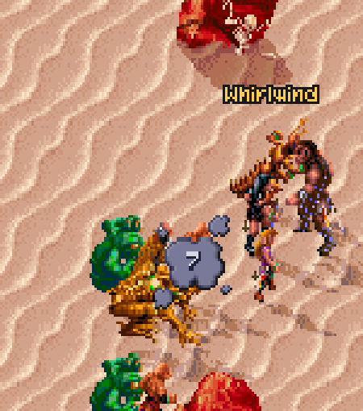
How it works: DEVELOPMENT-CONTENT.md.
The game's bugs, fixed
The patched game also mends dozens of the game's own bugs, whatever the Options tab says: spells that never did what they say, fights, screens, and people and quests that could stall. They have a page of their own, grouped by kind: The game's bugs, fixed (some spoilers).
With the game's people wearing their weapons and armour from the start (one of those fixes: who turns up), the mod also puts on what else they carry to wear: a cloak, a belt, boots, an amulet and up to two rings, which the game never did. Each counts by the same rules as the party's.